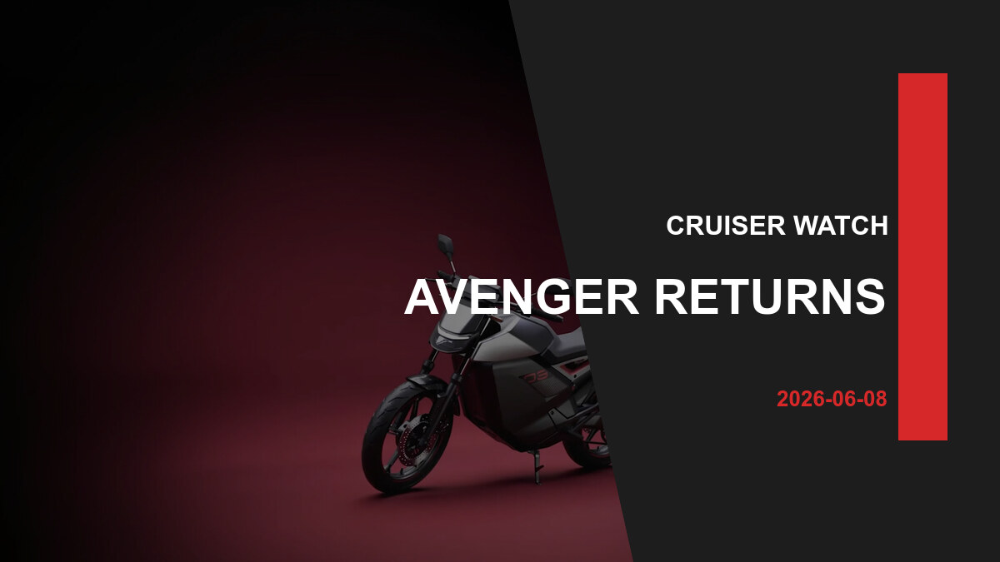

Bajaj Avenger 220 Street Returns: A Simple Cruiser Still Has a Job

The Avenger 220 Street is back in India's cruiser conversation, but buyers should see it as a comfort-first city cruiser rather than a modern feature-loaded motorcycle.
The Return Is About Comfort, Not Spec Racing
Bajaj Avenger 220 Street India 2026 relaunch is trending because the Street badge gives cruiser buyers another low-seat option at a time when many motorcycles are becoming taller, sharper and more expensive.
Bajaj's official page lists the familiar 220cc oil-cooled DTS-i engine, single-channel ABS, a 13-litre tank and street-style ergonomics. That is not a radical update, but it may be enough for riders who want an easy daily cruiser.
Street or Cruise Depends on Posture
The Street version is the more urban-looking Avenger, with blacked-out styling and a less chrome-heavy personality. The Cruise remains better aligned with relaxed highway imagery. Buyers should decide by handlebar feel, foot position and pillion comfort rather than colour alone.
The Avenger's strength is accessibility: low saddle, manageable power and a calm riding position. Its weakness is that rivals now offer more features, newer platforms and stronger performance for riders who want excitement.
Test-ride focus
Check U-turn comfort, rear suspension over bad roads, braking feel and whether the handlebar suits your shoulder width. Cruiser comfort is personal, so a spec sheet cannot settle the decision.
Market Impact: Simple Bikes Still Sell
The Avenger 220 Street shows that not every buyer wants a tech-heavy motorcycle. Some riders want a known engine, relaxed posture and predictable maintenance from a widespread brand.
That gives Bajaj a narrow but useful space if pricing stays sensible. The bike should appeal to commuters who want cruiser style without moving into a much larger, heavier or costlier segment.
Conclusion
The Avenger 220 Street is a practical city cruiser for riders who value posture and simplicity. Buy it for comfort, not for the newest feature list.
Related Reading
For more context, compare this story with Honda NX500 E-Clutch: Useful Touring Tech or an Expensive Convenience? and Royal Enfield Bullet 650: The Most Powerful Bullet Is Still Selling Familiarity and Hero Flex-Fuel Splendor and HF Deluxe: The Big Question Is Fuel Access and Oben Rorr Evo Bookings: What 25,000 Orders Really Tell Electric Bike Buyers.